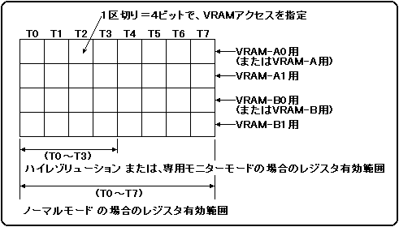

VDP2は、スクロール画面のデータをTVの走査に同期してVRAMから読み出しながら表示しています。表示期間中のVRAMアクセスは、4回または8回のアクセスを動作単位(1サイクル)として、そのサイクルを繰り返します。TV画面モードがノーマルモードのときは、8回のアクセスが1サイクルになります。また、ハイレゾリューションモードまたは専用モニターモードのときは、4回のアクセスが1サイクルになります。
1サイクル中に行うVRAMアクセスには、以下の10種類があります。
- ノーマルスクロール画面のパターンネームデータリードアクセス
- ノーマルスクロール画面のキャラクタパターンデータリードアクセスまたは、ビットマップパターンデータリードアクセス
- NBG0、NBG1の縦セルスクロールテーブルデータリードアクセス
- CPUによるリード／ライトアクセス
- アクセスしない
- RBG0のパターンネームデータリードアクセス
- RBG0のキャラクタパターンデータリードアクセスまたは、ビットマップパターンデータリードアクセス
- RBG0の係数テーブルデータリードアクセス
- RBG1のパターンネームデータリードアクセス
- RBG1ののキャラクタパターンデータリードアクセス
上記1.〜5.のVRAMアクセスは、1サイクル中のどのタイミングで行うかを、VRAM-A0、VRAM-A1、VRAM-B0、VRAM-B1のそれぞれのバンクについて指定しなければいけません。その指定は、それぞれのVRAMアクセスの種類に対応したアクセスコマンドと呼ばれる4ビットの値をVRAMサイクルパターンレジスタに書き込むことで行います。
6.〜8.のVRAMアクセスは、それぞれ1サイクル全てのタイミングを占有するので、1つのバンクに対して1種類しか指定できません。その指定は、それぞれのVRAMアクセスの種類に対応した値をRAMコントロールレジスタの回転データバンク指定ビットに書き込むことで行います。6.〜8.のVRAMアクセスを指定されたバンクのVRAMサイクルパターンレジスタの設定は無効になります。
9.、10.のVRAMアクセスは、それぞれ1サイクル全てのタイミングを占有し、9.はVRAM-B1に、10.はVRAM-B0に固定されています。9.、10.の指定は、RBG1を表示させると自動的に行われ、そのときVRAM-B0、VRAM-B1のVRAMサイクルパターンレジスタの設定は無効になります。
VRAMサイクルパターンレジスタには、VRAM-A0、VRAM-A1、VRAM-B0、VRAM-B1のそれぞれのバンクに対応したレジスタがあります。VRAMを2分割しない場合は、VRAM-A0用のレジスタがVRAM-A用に、VRAM-B0用のレジスタがVRAM-B用に使用され、VRAM-A1とVRAM-B1用のレジスタは使用されません。それぞれのバンクに対応したレジスタは、T0〜T7の8つのアクセスタイミングに区切られ、T0用ビットに指定されたアクセスコマンドの示すVRAMアクセスから順番にアクセスが行われます。TV画面がノーマルモードの時は、T0〜T7のすべてが有効になりますが。ハイレゾリューションモードまたは専用モニターモードのときはT0〜T3のみが有効となり、T4〜T7は無視されます。1サイクル中に使用されるVRAMサイクルパターンレジスタを図3.2に示します。
図3.2 VRAMサイクルパターンレジスタ

表示に必要なVRAMアクセスを指定した後に余ったアクセスタイミングには、必ず「アクセスしない」を設定してください。また、VRAMサイクルパターンレジスタに指定したVRAMアクセスのアドレスが、指定したバンク内のアドレスでなかった場合、アクセスが行われず正しい画面表示ができません。